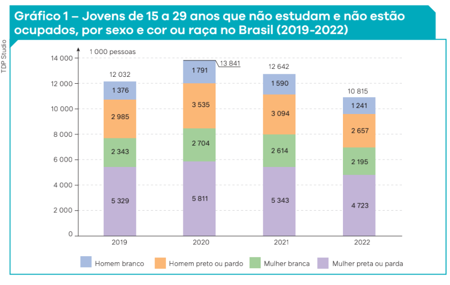
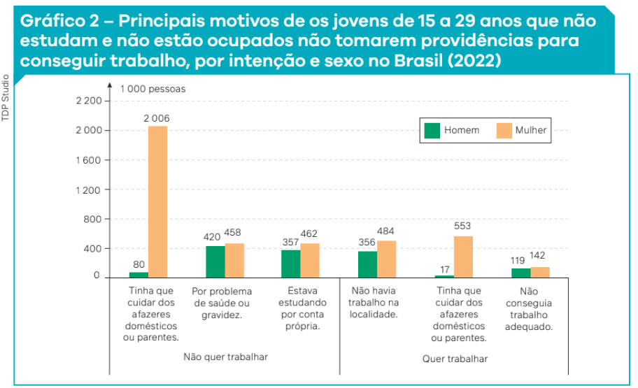

1.
Na atualidade, podemos afirmar que todos os jovens de 15 anos que vivem na zona urbana e frequentam a escola têm a mesma identidade? Explique sua resposta.
2.
O que você aprendeu do conceito de identidade? Que elementos você diria que compõem a sua identidade?
3.
3. Com base nos gráficos 1 e 2, analise as afirmativas e indique no caderno quais estão corretas.
I. Raça e gênero são marcadores sociais que afetam o acesso dos jovens brasileiros aos estudos e ao mercado de trabalho. Com base nos dados, podemos afirmar que o fator racial é ainda mais determinante que o gênero, já que o número de homens e mulheres brancos que não estudam e não estão ocupados é menor que o número de homens e mulheres negras nessa condição.
II. Há uma parcela dos jovens brasileiros que não está trabalhando e não está matriculada em instituições de ensino, mas que está estudando por conta própria.
III. O trabalho doméstico e de cuidado com parentes é o principal fator que afasta as mulheres jovens dos estudos e do mercado de trabalho formal. Já os problemas de saúde e a ausência de empregos são os principais fatores que afetam os homens jovens.
a) Apenas a afirmativa II está correta.
b) Apenas as afirmativas I e II estão corretas.
c) Apenas as afirmativas II e III estão corretas.
d) Todas as afirmativas estão corretas.

Fonte: IBGE. Síntese de Indicadores Sociais: uma análise das condições de vida da população brasileira: 2023. Rio de Janeiro: IBGE, 2023. p. 44. Disponível em: https://biblioteca. ibge.gov.br/visualizacao/livros/ liv102052.pdf. Acesso em: 3 set. 2024.

Fonte: IBGE. Síntese de Indicadores Sociais: uma análise das condições de vida da população brasileira: 2023. Rio de Janeiro: IBGE, 2023. p. 48. Disponível em: https://biblioteca. ibge.gov.br/visualizacao/livros/ liv102052.pdf. Acesso em: 3 set. 2024.
I. Raça e gênero são marcadores sociais que afetam o acesso dos jovens brasileiros aos estudos e ao mercado de trabalho. Com base nos dados, podemos afirmar que o fator racial é ainda mais determinante que o gênero, já que o número de homens e mulheres brancos que não estudam e não estão ocupados é menor que o número de homens e mulheres negras nessa condição.
II. Há uma parcela dos jovens brasileiros que não está trabalhando e não está matriculada em instituições de ensino, mas que está estudando por conta própria.
III. O trabalho doméstico e de cuidado com parentes é o principal fator que afasta as mulheres jovens dos estudos e do mercado de trabalho formal. Já os problemas de saúde e a ausência de empregos são os principais fatores que afetam os homens jovens.
a) Apenas a afirmativa II está correta.
b) Apenas as afirmativas I e II estão corretas.
c) Apenas as afirmativas II e III estão corretas.
d) Todas as afirmativas estão corretas.